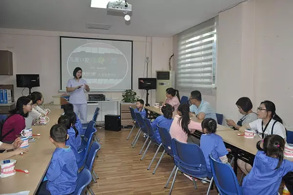
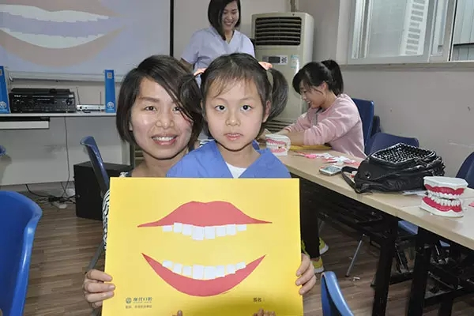
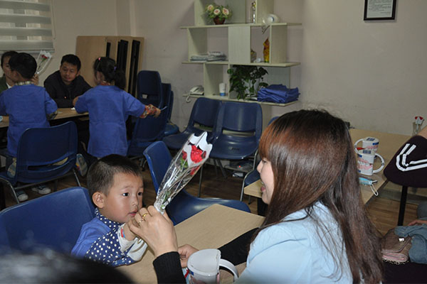
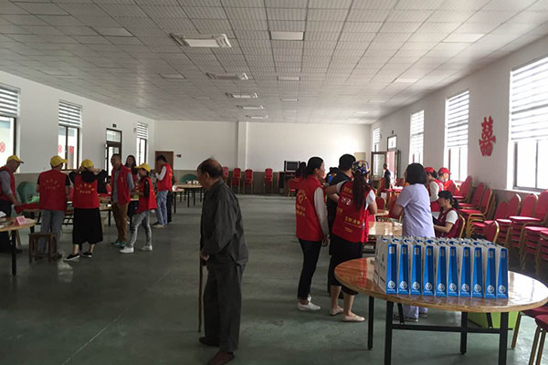
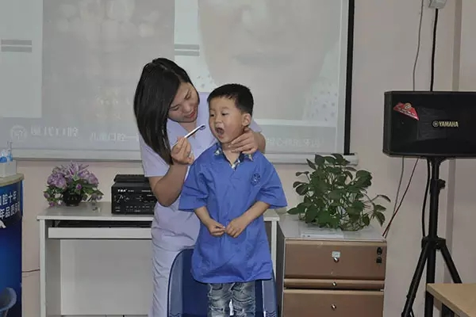

博爱公益
更多》》 HAPPY时光 小小牙医第42期 亲子体验日志 5月15日周日上午，优贝口腔第42期小小牙医亲子体验活动顺利开展!一起来看下这期小小牙医有哪些成长体验吧~ ● ● 小小牙医活动通过开展讲座、手工制作DIY及角色扮演的形式，... 详情>>
5月8日是母亲节，为纪念母亲的恩情， 优贝口腔特开展 小小牙医 母亲节特辑【妈妈，今天我来做您的私人牙医】 。活动通过角色扮演的形式，增加孩子们对口腔健康的认知，同时，培养孩子们对母亲的敬爱之情~一起来看小... 详情>>
优贝口腔医院周末公益行，5月14日上午8时30分，优贝口腔一行来到柴桥高村为村民进行爱心义诊，为当地的村民进行口腔检查，口腔知识宣教，弘扬奉献、友爱、互助、进步的志愿精神。 场地布置 优贝口腔从建立之初起就开... 详情>>
美好周末，与孩子的约会除了去公园，书店，还能干神马？来#优贝口腔小小牙医#体验营看看吧！不仅仅能与孩子一起免费检查口腔，学习护齿知识，亲子牙齿DIY手工，还能体验小小牙医职业精彩呢！还等什么？赶紧带着小伙...详情>>
年度最萌小牙医 微信评选大赛开始啦！ 优贝口腔 《小小牙医》 亲子体检营 开办1年多 以来，已成功 举办40多期 ，有 近500多名 小牙医 在此成长、毕业。优贝口腔以其 独特的儿童职业体验式教育理念 ，吸引了众多家长...详情>>